作文模板库
✍️ 答题动线 从审题到交卷，30 分钟怎么用
考场按这 6 步走，比"背了多少句"更决定分数。右侧时间为建议用时。
🖼 真题图表 2010–2026 全 17 年 · 看图口述第一段
先盖住下方的骨架，看图自己说：这是什么图、几个事物、怎么分段，再点图看大图核对数字。
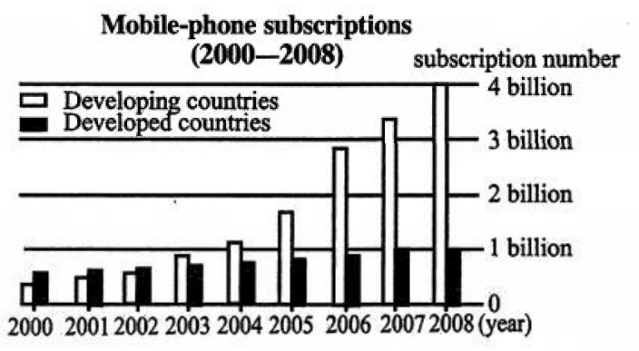
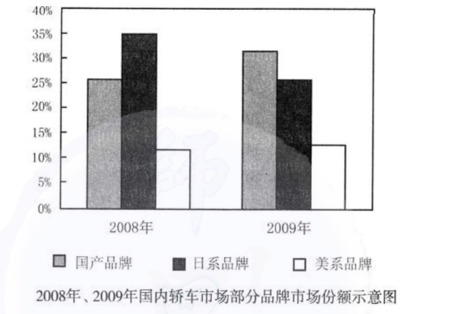
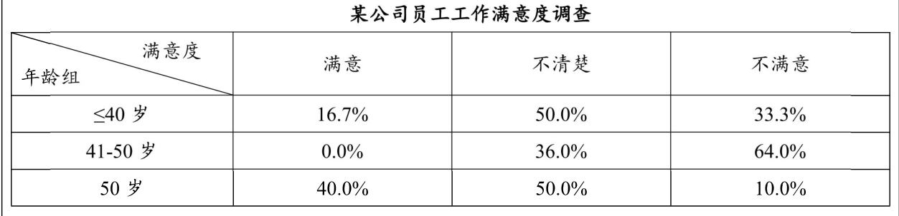
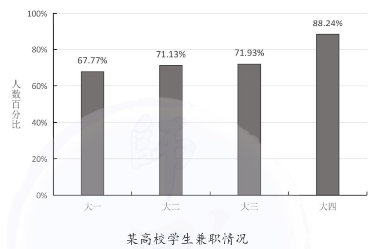
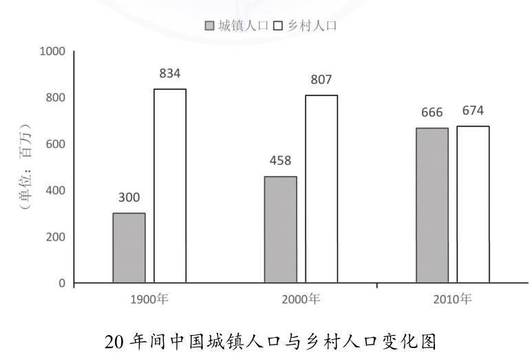
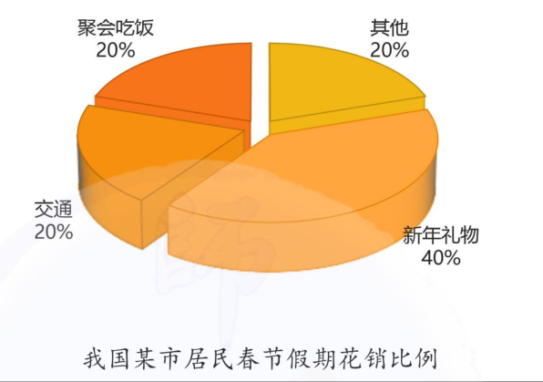
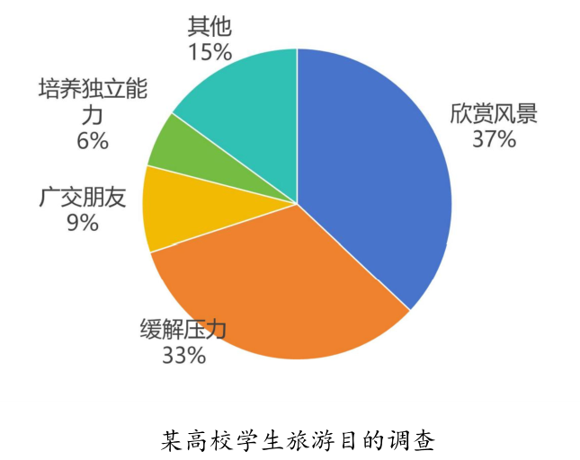
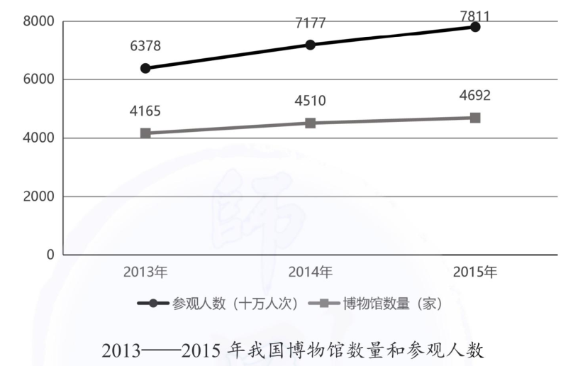
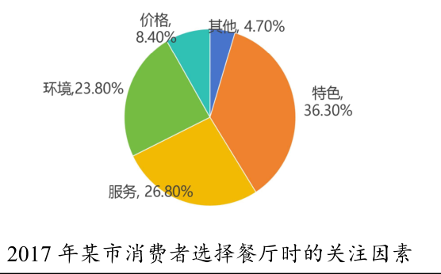
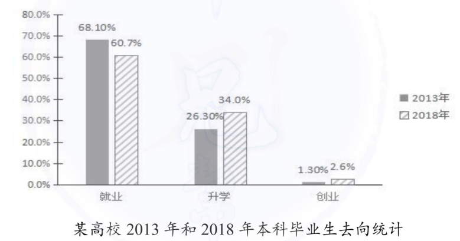
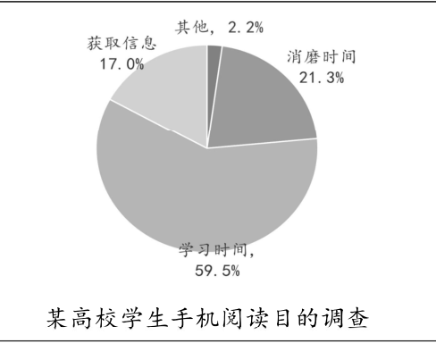
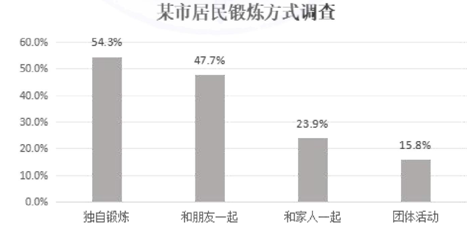
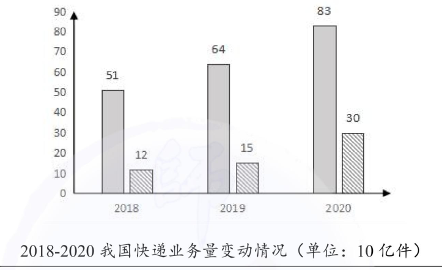
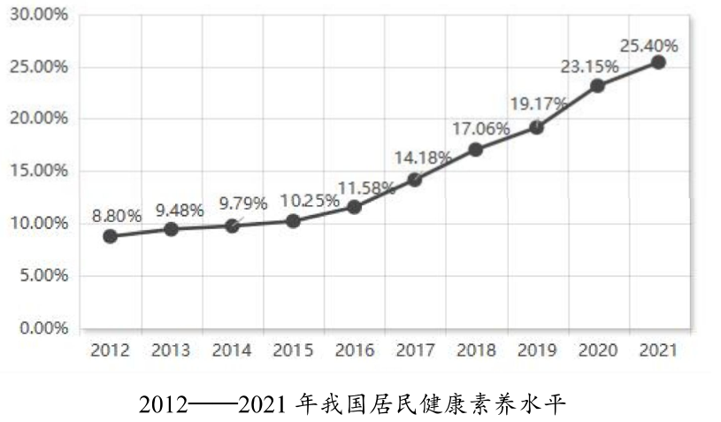
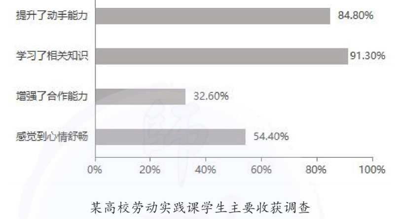
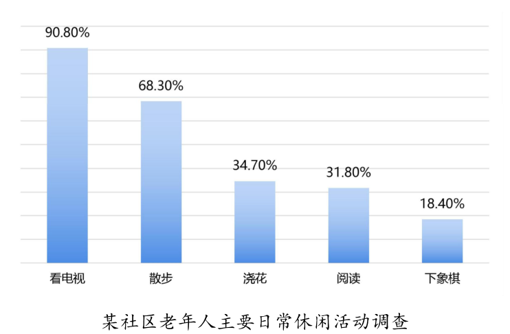
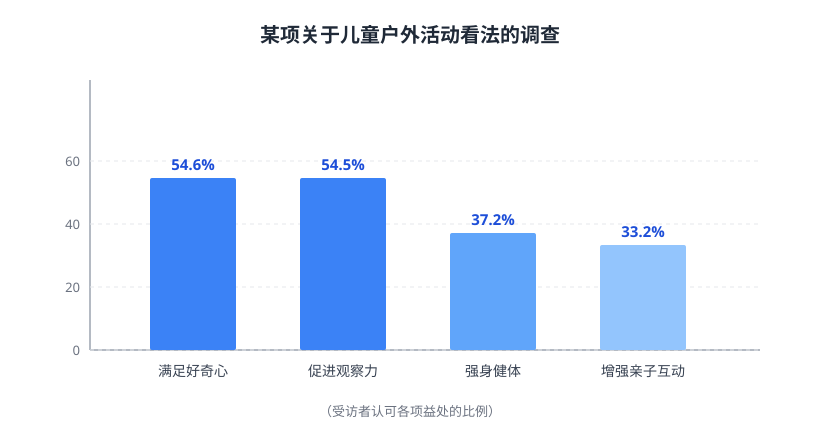
| 年份 | 图表 | 事物数 | 走势特征 | 类型 | 套用要点 | 真题套用示范 |
|---|
选句决策（按结构挑句，而非整段硬套）
📐 数据描述语言工具 图表作文的核心得分工具
第一段拿分全靠这里：把图说清楚、说出重点。下面 6 组是「看到什么图 → 用哪个说法」，末尾是高频错误清单。
⚠️ 高频错误清单
加载中…